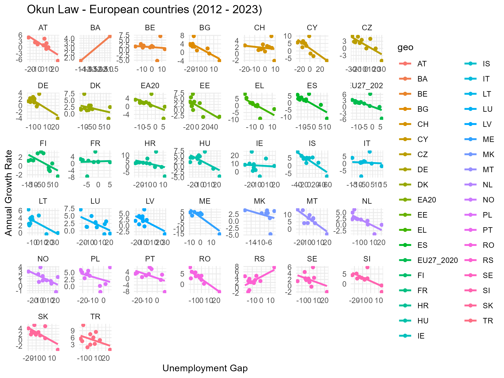
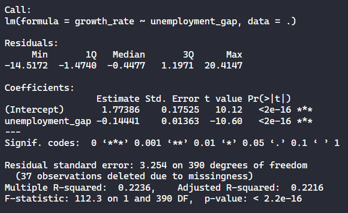
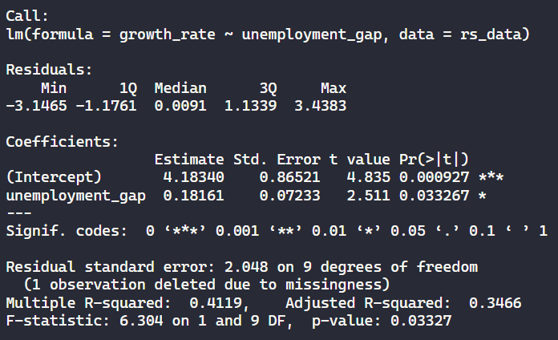

Analyzing Okun’s Law in EU Countries and the Case of Serbia
1. Introduction: Understanding Okun’s Law
Okun’s Law is an empirically observed relationship between unemployment and GDP growth, suggesting that as an economy grows, the unemployment rate tends to fall. This concept, first proposed by economist Arthur Okun, states that for every percentage point decrease in unemployment, GDP must grow by about 2-3%. Essentially, it links economic growth to job creation, although this relationship can vary between countries due to differences in labor markets and productivity.
In this analysis, I focused on investigating whether Okun’s Law holds true for European Union countries between 2012 and 2023. Specifically, I performed a regression analysis to examine the relationship between the GDP growth rate and the unemployment gap for various EU countries. I also undertook a deeper study into Serbia’s case, where the relationship between GDP growth and unemployment seemed counterintuitive.
2. Data Visualization and Linear Regressions: Exploring the Relationship
I started by importing GDP and unemployment data from the Eurostat database for EU countries and then filtered the data to focus on the relevant metrics: GDP growth and unemployment. I calculated the annual growth rate for each country and the unemployment gap, then applied regression models to study the relationship between these two variables.
Key Observations:
- Visualizing Okun’s Law: I plotted scatter plots of unemployment gap vs. growth rate for each country and observed a negative trendline for most countries. This aligns with Okun’s Law, indicating that as GDP grows, unemployment tends to decrease.

- Regression Results: Performing linear regression for each country revealed that the coefficient for unemployment was negative for the majority of countries, confirming the inverse relationship between growth rate and unemployment. However, the dataset was limited (2012-2023), which may affect the robustness of these results.

Despite the general confirmation of Okun’s Law across EU countries, one exception stood out: Serbia. For Serbia, the regression model indicated a positive relationship between unemployment gap and growth rate, which was unexpected and contrary to the general trend.

3. The Case of Serbia: A Closer Examination

Visualizing Serbia’s Data:
 
In the case of Serbia, I focused on visualizing the annual GDP growth and unemployment rate over time. I noticed:
GDP Growth: Serbia’s GDP showed an overall ascending trend during the study period.
Unemployment: Meanwhile, the unemployment rate steadily decreased.
Investigating Labor Productivity:

Given that GDP was growing and unemployment was falling, I investigated labor productivity in Serbia to further understand the dynamics. The results were surprising:
- Labor productivity showed a descending trend between 2012-2017 and 2020-2023, while it ascended briefly between 2017-2020. This was counterintuitive since one would expect labor productivity to increase as unemployment decreases.
Hypothesis for the Phenomenon:
One possible explanation for this paradox lies in the threshold concept within Okun’s Law. According to this concept, economic growth must reach a certain level before it can lead to a sustained decrease in unemployment. In Serbia’s case, despite the growth in GDP, it may not have reached the critical threshold to trigger a meaningful improvement in labor productivity. The economy’s structure, investments in high-productivity sectors, or labor market inefficiencies could also play a role.
4. Comparing Serbia with France and EU-27

To better understand Serbia’s unique case, I compared its GDP growth rate with France and the EU-27. This comparison revealed:
EU-27 and France: Both regions followed a more conventional relationship between GDP growth and unemployment, with labor productivity and GDP trends more aligned with Okun’s Law.
Serbia: Serbia’s GDP growth rate diverged, exhibiting higher volatility and, as noted earlier, a positive relationship between growth and unemployment.
This discrepancy supports the hypothesis that Serbia’s economic growth, though positive, may not be strong or efficient enough to consistently lower unemployment and boost productivity.
5. Conclusion: Implications and Further Research
In this study, Okun’s Law was generally verified for EU countries, as most exhibited the expected inverse relationship between GDP growth and unemployment. However, Serbia’s case presented an anomaly, with a positive relationship between growth and unemployment, and declining labor productivity despite falling unemployment.
This unique scenario suggests that while Serbia has experienced economic growth, it may not have been sufficient to overcome structural challenges in the labor market and productivity. Further research could explore factors such as sectoral shifts in employment, the impact of foreign direct investment, or the role of technological adoption in shaping these trends.
In conclusion, while Okun’s Law provides a useful framework for understanding the interplay between economic growth and unemployment, individual country cases like Serbia highlight the importance of considering broader economic, institutional, and productivity factors when analyzing this relationship.